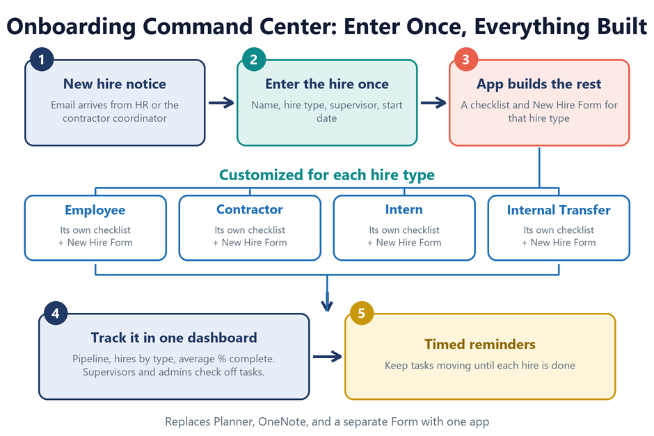

Power AppsSharePointPower Automate
Onboarding Workflow Command Center
Enter a hire type once, and the app creates a customized checklist and New Hire form for that type, all in one place. A dashboard shows the pipeline, hires by type, and live progress for every hire, with supervisor notifications and timed reminders. Built with Power Apps, SharePoint Lists, and Power Automate. Live and in pilot use.